1. Cosa ti servirà
Prima di iniziare, assicurati di avere a disposizione:
| Elemento | Descrizione |
|---|---|
| PC compatibile | Un computer con almeno 4GB di RAM e 25GB di spazio libero su disco. |
| Immagine ISO di Ubuntu | Scarica l'immagine ISO di Ubuntu dal sito ufficiale.
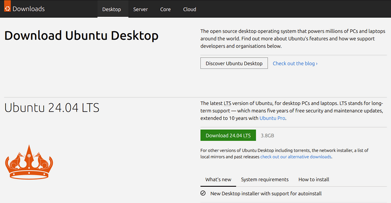 |
| Chiavetta USB | Una penna USB con almeno 12GB di spazio per creare un supporto di installazione con Rufus o BananaEtcher |
2. Avvio da USB
Inserisci la chiavetta USB nel computer e riavvialo. Durante l'avvio, accedi al menu di boot premendo il tasto appropriato (guarda tabella) e seleziona la chiavetta USB come dispositivo di avvio.
| Marca del PC | Tasto per accedere al menu di boot |
|---|---|
| AsRock, Asus, Acer | F2 o DEL |
| DELL, GigaByte | F2 o F12 |
| Lenovo | F12 o Fn + F12 |
| MSI | DEL |
| HP | F10 |
Una volta selezionata la combinazione di tasti, sullo schermo, dovrebbe esserci una situazione simile a questa:
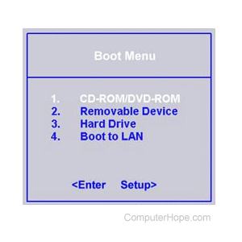
3. Installazione di Ubuntu
Segui le istruzioni sullo schermo per completare l'installazione di Ubuntu.
Verrai accolto dalla
selezione della lingua.
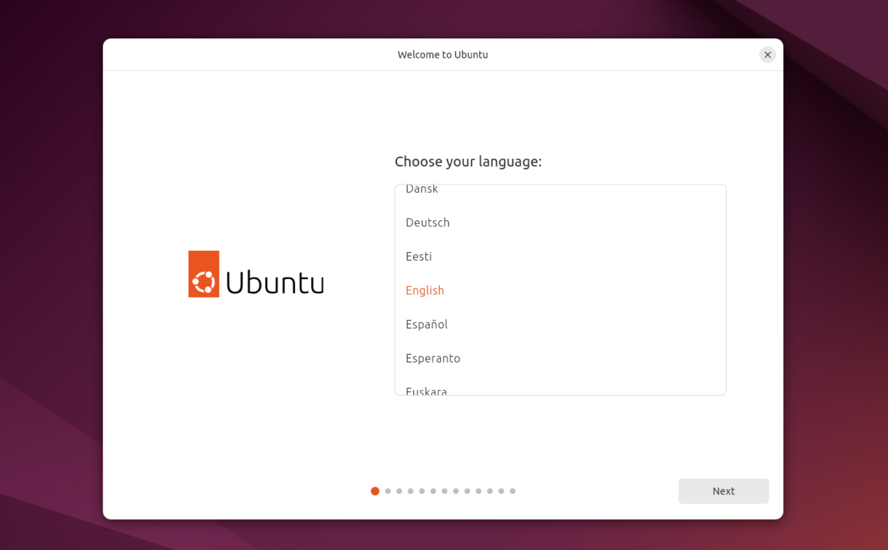
Poi, verranno mostrate opzioni riguardanti l'accessibilità.
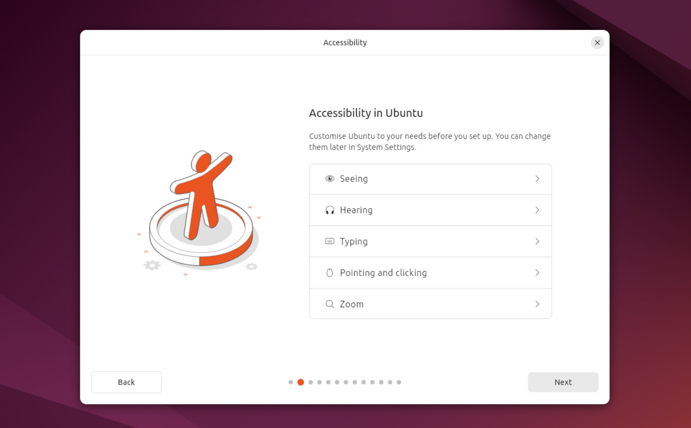
Passiamo poi alla selezione del layout della tastiera.
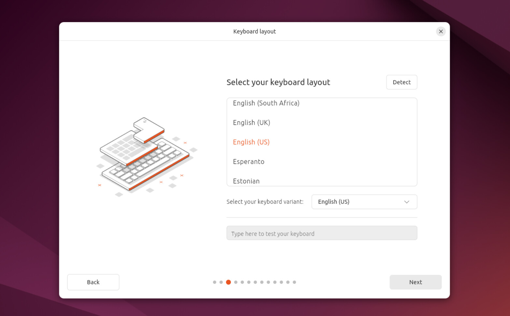
E la connessione alla rete Wi-Fi.
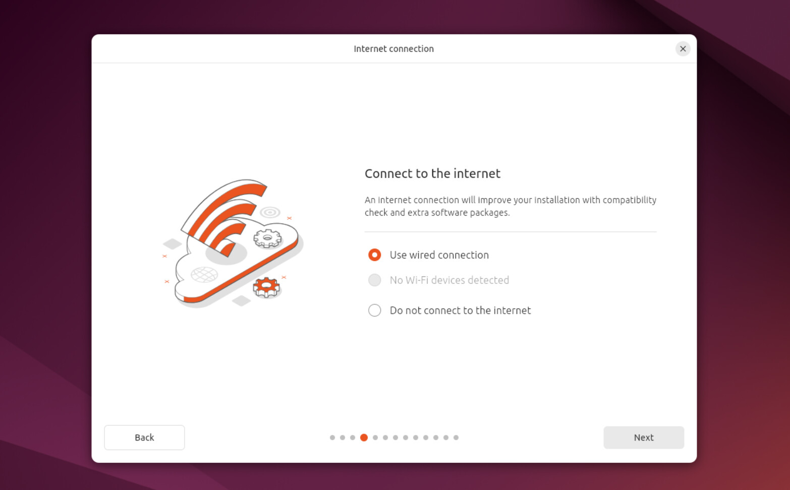
Poi, potrai scegliere se installare il sistema sul disco o provarlo direttamente da USB.
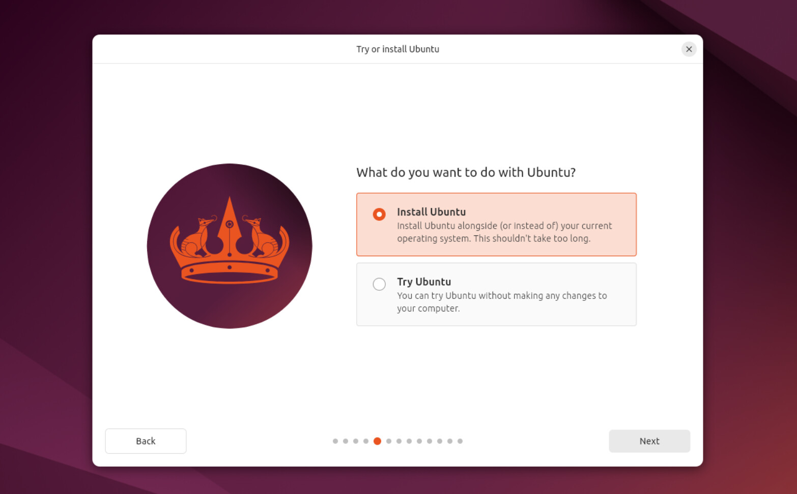
Se scegli di installare, ti verrà chiesto di selezionare il tipo di installazione.
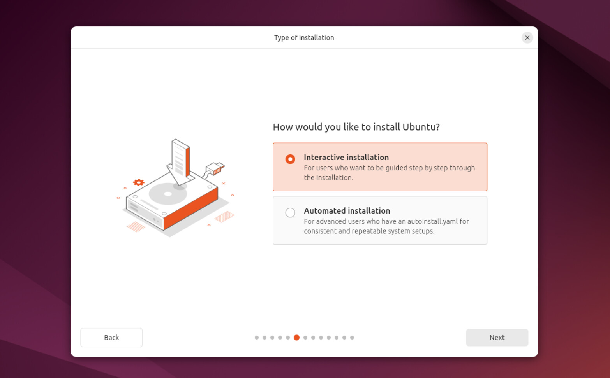
Se scegli di effettuare un'installazione interattiva, l'installer ti guiderà nel processo.
Se scegli
invece un'installazione automatica, verrà richiesto di importare un file da un server web per effettuare
più installazioni in ambienti come l'ufficio.
In questa guida, effettueremo un'installazione di tipo
interattivo.
L'installer ti chiederà se effettuare un'installazione "pulita", senza programmi aggiuntivi, o una "estesa", che include l'installazione automatica di strumenti utili, come il pacchetto LibreOffice.
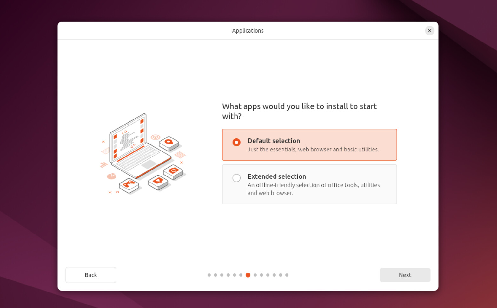
Passiamo ora al succo del processo: l'installazione sul disco rigido.
L'installer ti proporrà tre
scelte:
- Svuota Disco e Installa Ubuntu
- Installa Ubuntu Accanto a Windows
- Installazione Manuale
Se scegli la prima opzione, il disco rigido verrà completamente formattato e Ubuntu sarà l'unico sistema
operativo presente.
Se scegli la seconda opzione, Ubuntu verrà installato accanto a Windows, permettendoti di scegliere
quale sistema operativo avviare all'accensione del computer.
Se scegli la terza opzione, potrai personalizzare la partizione del disco rigido, creando partizioni
separate per il sistema operativo, i dati e lo swap, se necessario.
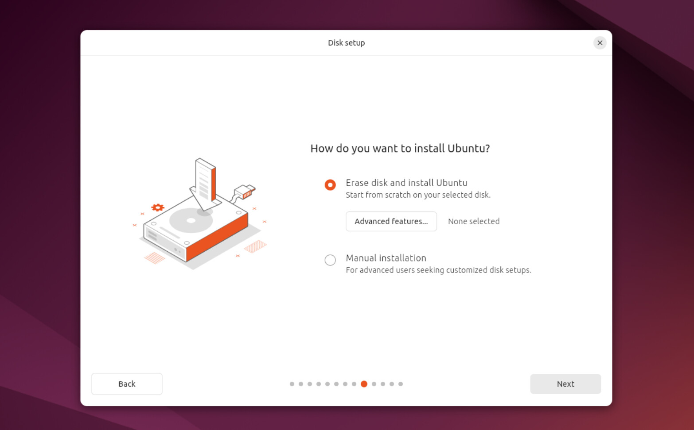
Dopo aver selezionato il tipo di installazione, l'installer ti chiederà di inserire alcune informazioni personali, come il tuo nome, il nome del computer, il nome utente e la password. Assicurati di scegliere una password sicura e di ricordarla, poiché sarà necessaria per accedere al sistema e per eseguire operazioni amministrative.
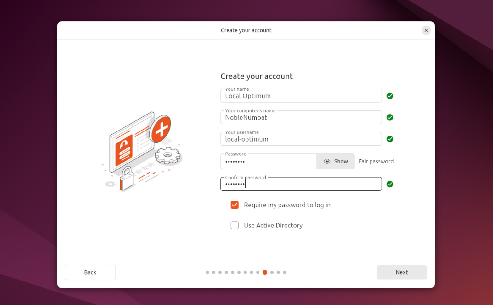
Dopo aver inserito tutte le informazioni richieste, l'installer inizierà il processo di installazione, copiando i file necessari sul disco rigido e configurando il sistema. Questo processo potrebbe richiedere alcuni minuti, a seconda della velocità del tuo computer e del tipo di installazione scelto.
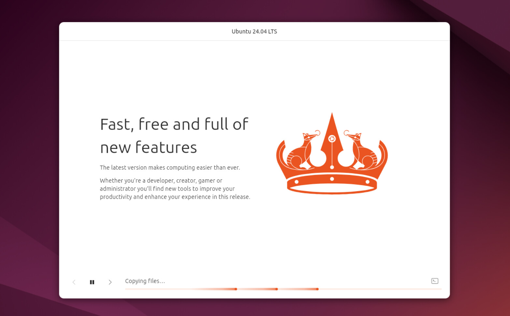
Una volta completata l'installazione, ti verrà chiesto di riavviare il computer. Rimuovi la chiavetta USB quando richiesto e premi Invio per riavviare. Al riavvio, dovresti vedere il menu di avvio di GRUB, che ti permetterà di scegliere tra Ubuntu e Windows (se hai scelto l'installazione accanto a Windows).
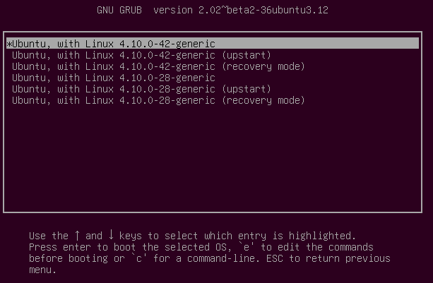
Seleziona "Ubuntu" e premi Invio per avviare il tuo nuovo sistema operativo. Al primo avvio, potresti essere accolto da una schermata di benvenuto che ti guiderà attraverso alcune configurazioni iniziali, come l'installazione di aggiornamenti e la personalizzazione del desktop.
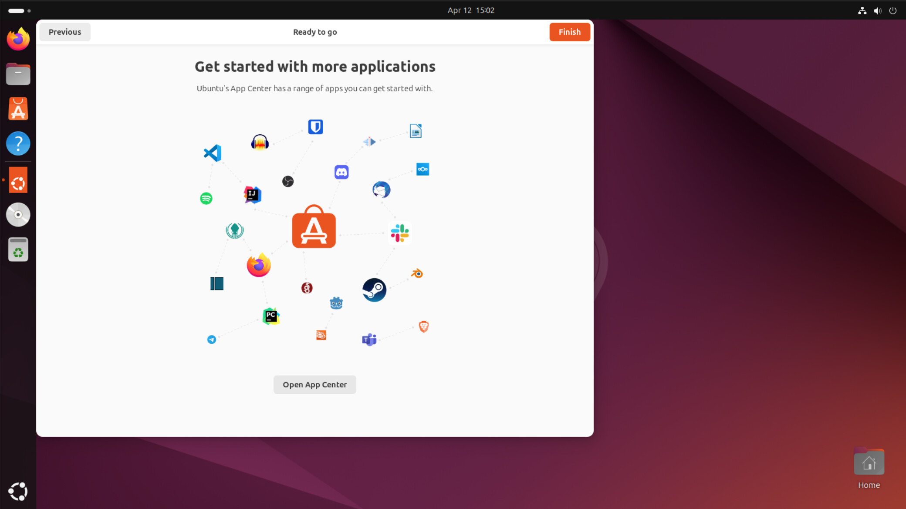
Congratulazioni! Hai installato con successo Ubuntu sul tuo computer. Ora puoi esplorare il mondo di Linux e personalizzare il tuo sistema secondo le tue esigenze.